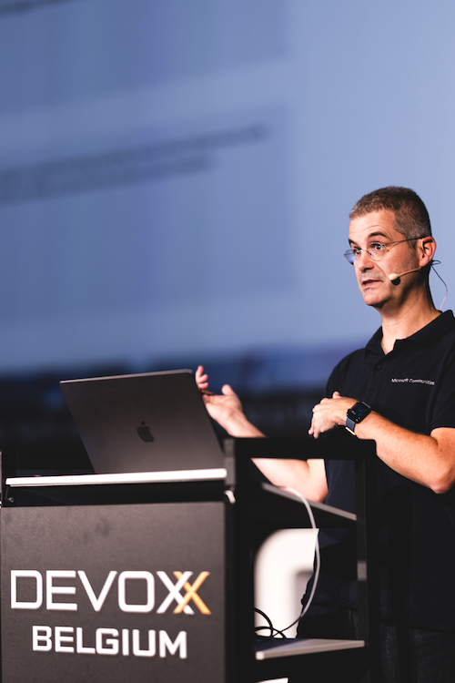

My talks are always adapted to the audience, and updated until the last minute, so this is just a general abstract. It can be delivered in English or French.

AI code generation in Java
Generative AI has transformed software development. In just a few years, we've moved from basic code completion to fully autonomous coding agents that read your project, write code, run tests, and fix their own mistakes.
In this session, we'll cover:
- The rapid evolution of AI agents: from completion to autonomy, with agent mode, plan mode, and parallel agents using Git worktrees
- The Model Context Protocol (MCP): how agents connect to databases, APIs, and external tools in real time
- Agent Skills: how to specialize an agent for a specific domain — with a live demo of
dr-jskill, generating a full Spring Boot 4 + Java 25 + Vue.js application - IDE integration: GitHub Copilot in VS Code and IntelliJ IDEA, plus the new GitHub Copilot desktop app for running multiple agentic sessions in parallel
- Best practices for Java:
AGENTS.md, JDTLS (Eclipse JDT Language Server), and why the harness around the model matters more than the model itself
Expect plenty of live demos and concrete, opinionated advice drawn from real-world experience building and shipping with AI agents.
Slides
